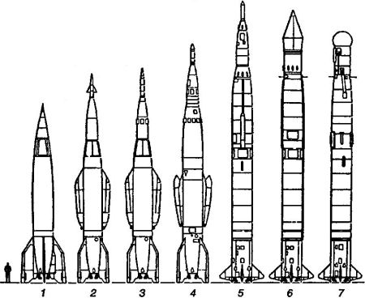

Краткая история геофизических ракет
По свидетельству соратников Королева, Главный конструктор весьма болезненно воспринимал тот факт, что ему приходится воссоздавать немецкую баллистическую ракету, отложив свои собственные проекты в долгий ящик. По этой причине Сергей Павлович практически не общался с немецкими специалистами острова Городомля, игнорировал их предложения и постоянно ссорился с генералом-полковником Устиновым, который был инициатором точного воспроизведения «Фау-2» как школы для производства.
Однако совсем отказаться от немецкого опыта Королев уже не мог, и первые высотные ракеты, созданные подчиненным ему коллективом для проведения научно-исследовательских работ в стратосфере и выше были созданы на основе все той же «Фау-2» и ее советских модификаций.
Первой в длинном ряду была созданная на основе «Р-1» геофизическая ракета «Р-1 А» («В-1А»).
История создания этой ракеты напрямую связана с первыми шагами по совершенствованию немецкой «Фау-2» и советской «Р-1». Как мы помним, уже на первом этапе разработчики предложили использовать несущий бак горючего и применить отделяемую от ракеты головную часть. В этом случае для носителя расчетным оставался только участок активного полета, значительно более благоприятный по механическим и тепловым нагрузкам, чем атмосферный участок нисходящей ветви траектории полета. Чтобы экспериментально проверить эти новые идеи, была создана ракета «Р-1А».
Однако в связи с тем, что многие организации заинтересовались возможностью использовать новую ракету для своих целей, программа экспериментов вышла далеко за рамки первоначального замысла.
С целью дальнейших усовершенствований в начале мая 1949 года было проведено испытание экспериментальной ракеты «В-1А» с отделяющейся головной частью. А 28 мая 1949 года «В-1А» впервые обеспечила успешное возвращение на Землю контейнеров с научными приборами (контейнеры располагались в районе стабилизаторов ракеты) после достижения ими высоты в 102 километра. При одинаковом с «Фау-2» максимальном диаметре корпуса 1,65 метра данная ракета имела длину около 15 метров, то есть примерно на один метр длиннее немецкой ракеты.
Чем больше было запусков по программе создания и модернизации баллистических ракет, тем очевиднее становилось: без знания физики высших слоев атмосферы нечего и думать о совершенствовании ракет как таковых. Поэтому впоследствии на базе принимаемых на вооружение боевых ракет было выпущено целое семейство научно-исследовательских ракет с такими же характеристиками.
Созданная на основе «Р-2» геофизическая ракета «В-2А» стартовой массой 20,7 тонны поднимала научные приборы на высоту до 200 километров. Ее длина вместе с приборным отсеком достигала почти 20 метров. Научная аппаратура располагалась в спускаемой головной части и двух отделяемых в полете геофизических контейнерах весом 860 килограммов. В контейнеры помещали стеклянные баллоны с вакуумными кранами для взятия проб воздуха, магнитные и ионизационные манометры, кассеты с полированными металлическими пластинками для регистрации ударов микрометеоритов, фотоаппараты для съемки облачных систем и поверхности Земли, регистрирующая аппаратура и программный механизм На определенной высоте контейнер выбрасывался из ракеты в сторону, что давало возможность вести измерения в невозмущенной среде. Спуск контейнеров на Землю производился на парашютах, раскрываемых на высоте 2 километров. Энергия удара при приземлении поглощалась специальным демпфером.
На базе «Р-5» была создана ракета «В-5А», которая могла поднимать грузы на высоту до 500 километров. Длина ракеты «В-5А» вместе с приборным контейнером равнялась 23,7 метра, а ее масса при старте составляла 29,3 тонны.

21 февраля 1958 года, уже после успешного запуска первых искусственных спутников Земли, «В-5А» поднялась на высоту 473 километра с полезным грузом в 1520 килограммов, установив мировой рекорд высоты для одноступенчатой ракеты.
Из этой же серии можно назвать ракеты «В-5Б» и «В-5В», которые применялись не только для исследования верхних слоев атмосферы, но и для изучения Солнца, звезд и космических лучей. В 1970-е годы в интересах социалистических стран, входящих в Совет экономической взаимопомощи, с помощью геофизических ракет, созданных на основе «Р-5», проводились исследования космического пространства по программе «Вертикаль».
В начале 1950-х годов Михаил Янгель, главный инженер НИИ-88, сконструировал тактическую ракету «Р-11» для сухопутных войск, двигатель которой работал на азотной кислоте и керосине. По сравнению с «Р-1» новая ракета имела в 2,5 раза меньшую стартовую массу при той же дальности полета. Первый успешный пуск ракеты «Р-11» в рамках лет-но-конструкторских испытаний состоялся 21 мая 1953 года.
Эксплуатационные особенности ракеты «Р-11» (запуск с колесной или гусеничной машины, железнодорожного спецвагона, надводного и подводного корабля) позволяли расширить область ее применения для научных исследований. Особый интерес представляла возможность геофизических наблюдений в районах Земли, куда доставлять ранее разработанные ракеты было практически невозможно — например, в приполярных районах СССР.
Ракета «В-11А», созданная на базе «Р-11», имела специальный обтекатель головной части, защищавший контейнер от теплового воздействия и аэродинамических нагрузок в полете, а также специальный переходный отсек для крепления контейнера, размещения пневматической системы разделения, коммутационной аппаратуры и системы успокоения. «В-11 А» была предназначена для измерения атмосферного давления на различных высотах от 60 до 160 километров, определения оптических свойств верхних слоев атмосферы, измерения концентрации положительных ионов, регистрации числа встреч контейнера с микрометеоритами.
Первый пуск ракеты «В-11А» на Новой Земле был проведен в октябре 1958 года, при этом ракета достигла высоты в 103 километра.